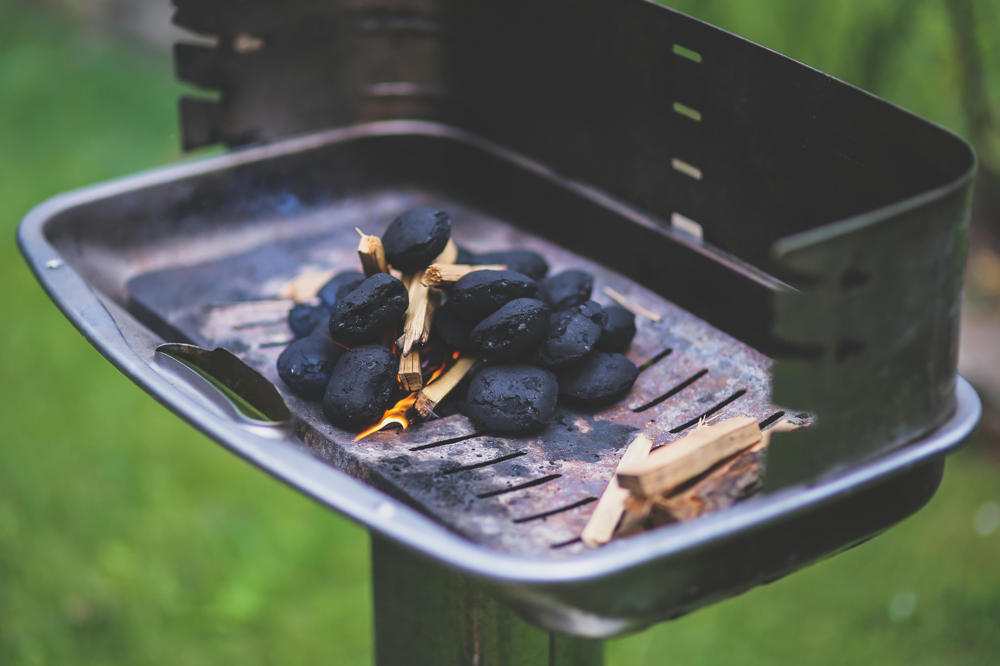
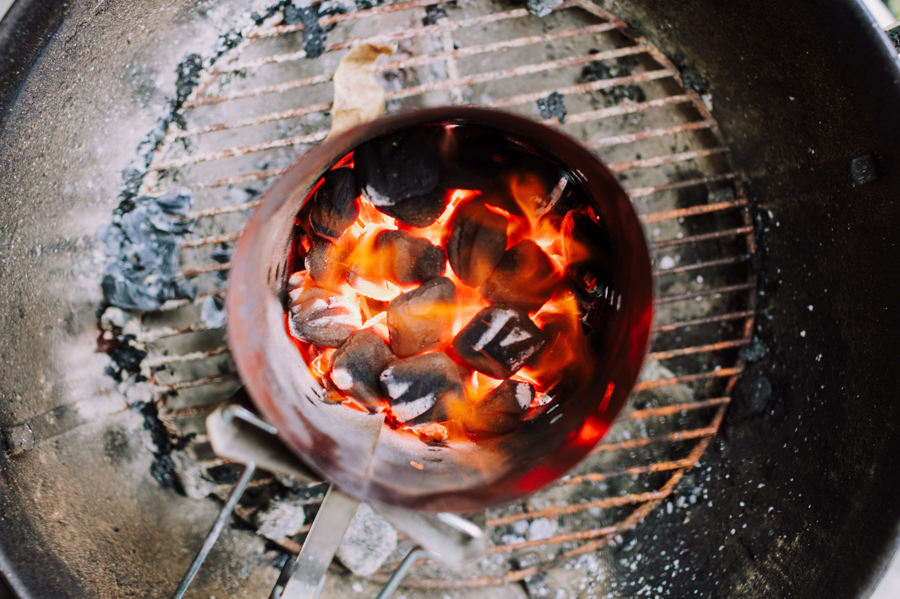

Grillowanie to nie tylko sposób na przygotowanie pysznych potraw na świeżym powietrzu, ale także sposób na spędzanie czasu z rodziną i przyjaciółmi. Aby zacząć grillować, musisz jednak najpierw nauczyć się, jak prawidłowo rozpalić grill. Poniżej znajdziesz praktyczny poradnik z krokami oraz kilkoma wskazówkami, które pomogą Ci osiągnąć idealny ogień do grillowania.
Wybór odpowiedniej lokalizacji dla Twojego grilla to kluczowy krok. Upewnij się, że grill jest ustawiony na płaskiej powierzchni z dala od palnych materiałów. Unikaj zbyt wietrznych miejsc, aby uniknąć problemów z kontrolą ognia.
Przygotuj brykiety węglowe, podpałkę do grilla oraz gaz zapałkowy. Dobrej jakości brykiety zapewnią równomierne i długotrwałe gorąco. Podpałka do grilla ułatwi rozpalanie, a gaz zapałkowy zapewni bezpieczne i skuteczne rozpoczęcie procesu.
Układaj brykiety równomiernie na dnie grilla. Możesz stworzyć kilka stref temperaturowych, układając brykiety gęściej w jednym miejscu, a mniej gęsto w innym. To przyda się, gdy będziesz grillować różne rodzaje potraw.
Napełnij podpałkę do grilla i umieść ją w środku układanych brykietów. Następnie delikatnie podpal brykiety, używając gazowej zapalarki. Odczekaj, aż brykiety będą żarzyć się równomiernie.
Gdy brykiety są dobrze rozpalone, rozłóż je za pomocą szczypiec do węgla. Teraz Twój grill jest gotowy do użycia! Dodaj ulubione potrawy i ciesz się aromatem grillowanych smakołyków.
To wszystko! Teraz wiesz, jak rozpalić grill jak profesjonalista. Pamiętaj o zachowaniu ostrożności i przestrzeganiu zasad bezpieczeństwa podczas grillowania. Smacznego!
Powrót na stronę główną